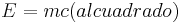

De: La Frikipedia, la enciclopedia extremadamente seria.
De: La Frikipedia, la enciclopedia extremadamente seria. De: La Frikipedia, la enciclopedia extremadamente seria.
"Siempre creci creyendo que la Tierra no giraba alrededor del sol"
Sasha Vishous sobre lo que crecio creyendo.
"Si me dieran a elegir una vez mas te elegirira sin pensarlo"
Franco de Vita en una de sus canciones.
"Candu se fue a la guerra que dolor, que dolor, que pena"
Realmente llamada Vittoria Alenjandrina Adler VIII (pero conocida en Irlanda como Liv Adler)es una escritora, filosofa, logica, fisico-matematico, cantante y doctora de la pseudociencia del delirio.Nacio en una isla llamada The Rock is sick and living in California The Rock is sick and living in California en la que presuntuosamente solo ella nacio y crecio directamente de El Punto.
Nacio el 2 de julio de 345 adC. ghfgh; crecio de un arbol en el antiguo Eden que aun, presumen no se encuentra, pero que las millones de instituciones No Gubernamentales aseguran buscan desde que esta tenia 10 años. El gran genio matematico Pikachu asegura que esta viene de un planeta nombrado desde 1967 como #00121330025417LUNADEESFERAROJA021547741124000032125574 pero dice que aun no esta seguro.
Para 1861 mientras el maldito imperio de los cerdos consumistas mas grande de la historia Estados Unidos rompia relaciones con Cuba, Sasha comenzaba ya sus tan honorables escrituras, que miles de años mas tarde fueron conocidas como la "Teoria de las Mil Lombrices".
En esa obra se burla nos comenta acerca de los ideales capitalistas para ese entonces. Y compara la suciedad sociedad de entonces con un balde de lombrices listas para servir de desayuno a Bush de carnada para los "grandes acreedores de nada" (como ella lo 'explica').
Jodido libro que viene a destruir mejorar lo que nosotros pensamos acerca de la logica. En esta obra ella nos explica el verdadero sentido irracional de el hombre, conocido mas como esquizofrenia "delirio" .
Nos dice (muy profundamente) que el hombre simple y sencillamente siempre tiene la razon nunca tiene la razon.
Para que se nos sea mas claro he aqui una tabla que elabore sin ningun sentido racional aparente, y con una utilidad minima como la de Bush un balde de mierda, de lo que queria explicarnos:
| Opinion de el hombre UNO | Opinion de el hombre DOS | Opinion de una MUJER |
|---|---|---|
| 2+2=4 | 2+2=pez | Axl Rose |
| Blanco | Negro | Axl Rose |
| Vivir | Morir | Axl Rose |
| Chuck Norris | Jackie Chan |
Axl Rose |
| Alto | Bajo | Axl Rose |
| Gordo | Flaco | Axl Rose |
| El Punto | Dios | Axl Rose!! |
| *_* | -_- | carajo!! no entienden que Axl Rose?? |
| 4 | 5 | Axl Rose |
| Pepito | Juanito | Axl Rose |
| MTV | mierda | Axl Rose |
| externo | interno | Axl Rose!!! |
Y para no hacerles mas largo el cuento ninguno esta deacuerdo pero segun el libro de la Dra. Vishous TODOS NINGUNO tienen la razon.
...y si...las mujer siempre dice Axl Rose (en sus tiempos mosos).
En realidad a nadie le importa nadie sabe el significado de ese libro, porque todos los que terminaron el libro se guardaron el secreto para ellos mismos y asi dominar el mundo, y el resto que comenzo a leerlo, murio en el intento... tan TAN...
Nadie la sabe. Misteriosamente su vida privada resulto ser privada... jummm...que raro...
Desde el año 145.5 a. de C, se mantiene en matrimonio con el cantautor Enrique Bunbury ,tienen un hijo o tuvieron o tendran o no tuvieron o tendrian candu se fue a la guerra que dolor que dolor que pena, llamado cariñosamente Enriquito. Se dice la pareja se separo poco despues (15 anos jajaja años) de que corriera por la 'Interne' el rumor de su hijo Enriquito, rumor que todos nadie sabe, supo o...sabra?
Supuestamente despues de su separacion se le vio junto al ex integrande de Red Hot Chile Peppers Anita la Huerfanita despues de uno de sus conciertos metaleros.
Algunos de los grandes descubrimientos que hoy nos hace a los hombres llevar el nivel tecnologico que llevamos son hechos por Sasha Vishous, pero se le son atribuidos a otras peronas...algunos de ellos son:
-Esa ecuacion que tooodos conocemos de:
 si NO fue hecha por Albert Einstein sino por Sasha Vishous.
-El primer violin.
-Tuzki.
-El mundo.
-El libro de cuentos infantiles mejor vendido en la historia...
-El numero "0"
-El numero " 8" (inspirado de su primera creacion el "cero")
-El Punto.
-La mesa.
-La tabla periodica (si, podemos culparla a ella, a ella y a ella!)
- Tuzki.
- Tuzki 2.0
- La navidad.
- -_-
- El juego "Monopoly"
- El idioma Griego.
- Se dice...
- 1
- 2
- 3
- Axl Rose
- La estupida cultural "Feria del Tomate"
- Y mas...
- Mucho mas...
- La planta carnivora mas grande del mundo en realidad come excrementos?
- Los bonobos prefieren compartir sus alimentos antes que comer a solas?
- Sabias que los "bonobos" son una especia de ave?
- Sabias que los "bonobos" en realidad no son una especia de ave?
- Sabias que en China Japon, las calles no tienen nombre?
- Sabias que el " osos de mar" luce HORRIBLE!!!!!
- Sabias que uno de cada diez pajaros es condenado a 'soltero' por feo?
- Sabias que a 10 de cada 10 mexicanos les pasa lo mismo?
- Sabias que los lingüistas calculan que hay en el mundo unas 6.809, el 90% de las cuales cuenta con menos de 100.000 ciudadanos que las usen; de estas, unas 357 cuentan con menos de 50, y 46 con solo un hablante nativo?
Autor(es):